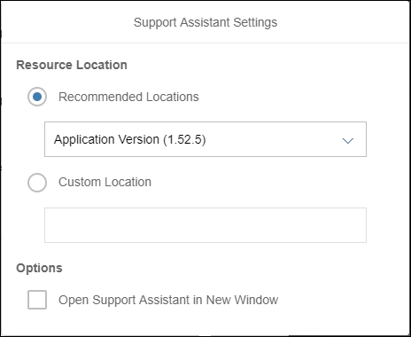
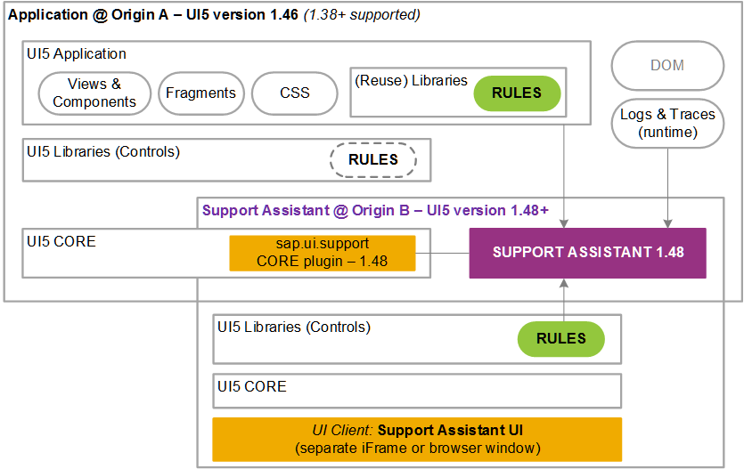

In some cases you may want to run the Support Assistant against a different version of
OpenUI5. You can do so by
following a few steps.
Prerequisites
The minimum OpenUI5 version in
which the Support Assistant is available is 1.44.17.
Procedure
-
Open the Technical Information Dialog using the shortcut
CTRL
+ SHIFT
+ ALT
+ P
.
-
Choose the settings button for the Support Assistant ().
-
Select a predefined version from the dropdown, or select Custom
Location to paste a custom URL in the input field.

Technical Information Dialog: Support Assistant Settings
- Under Options you can select if the Support
Assistant should be opened in a separate window.
-
Select Activate Support Assistant.
Your application will reload and the Support Assistant will start.
In the following diagram, you can see how the different
OpenUI5 versions
interact with the Support Assistant.

Support Assistant - Multi-Version Support
Results
You are now able to run the Support Assistant on the version that you selected.